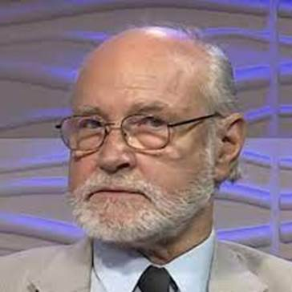

Vörös Imre
Életpályája
Tisztviselő szülők gyermekeként született Budapesten, nagybátyjai között magas rangú katonatisztek is voltak, emiatt középiskolai tanulmányait egy gépipari technikumban végezte. 1963-ban kezdte meg egyetemi tanulmányait az Eötvös Loránd Tudományegyetem Állam- és Jogtudományi Karán, ahol 1968-ban szerzett állam- és jogtudományi doktorátust. Egyetemi évei alatt Eörsi Gyula volt rá nagy hatással. Diplomájának megszerzése után egy külkereskedelmi vállalatnál kezdett el dolgozni jogi előadóként. 1969-ben, Eörsi hívására, a Magyar Tudományos Akadémia Állam- és Jogtudományi Intézetébe került, ahol a nemzetközi magánjogi csoport munkatársa, tíz évvel később pedig tudományos főmunkatársa lett, közben Strasbourgban és Leydenben tanult ösztöndíjjal. 1984-ben intézeti munkájával párhuzamosan a frissen induló miskolci jogászképzésben vállalt szerepet: a Nehézipari Műszaki Egyetem nemzetközi magánjogi tanszékének docense lett. 1986 és 1988 között Freiburg im Breisgauban Humboldt-ösztöndíjjal folytatott kutatómunkát. 1990-ben vehette át egyetemi tanári kinevezését, ekkor távozott a JTI-ből. 1994 és 1998 között a tanszék vezetője volt. 1998-ban átment a győri Széchenyi István Főiskolára (azóta egyetem), ahol kezdetben tudományos főmunkatársként dolgozott, 1999-ben egyetemi tanári kinevezést kapott, 2000-ben pedig a nemzetközi magánjogi tanszék vezetője lett. 1992 és 1999 között a Közép-európai Egyetem vendégprofesszora volt. 2002-ben pedig a Károli Gáspár Református Egyetem Állam- és Jogtudományi Karának egyetemi tanára, 2003-ban pedig a nemzetközi magánjogi tanszék vezetője lett. 2008-ban vette át a kar doktori iskolájának vezetését. Ezzel párhuzamosan 2002-ben visszatért az MTA JTI-be, ahol tudományos főigazgató-helyettessé nevezték ki. 2013-ban nyugdíjba vonult.
1979-ben védte meg az állam- és jogtudományok kandidátusi, 1989-ben pedig akadémiai doktori értekezését. Tagja lett az MTA Állam- és Jogtudományi Bizottságának, emellett 1984 és 1998 között a Miskolci Akadémiai Bizottság tagja is volt. 2010-ben a Magyar Tudományos Akadémia levelező, 2016-ban pedig rendes tagjává választották. Akadémiai tisztségein túl 2001-ben bekerült a Szellemi Tulajdonvédelmi Tanácsba, 2002-ben pedig a Magyar Iparjogvédelmi Egyesület elnökévé választották. 1998 és 2004 között az Európai Jogakadémia elnökségének volt tagja. 1972-től a Jogtudományi Közlöny című jogi folyóirat egyik szerkesztője. A rendszerváltás utáni közéletben is aktív szerepet vállalt: 1989-ben az egyik szerkesztője volt az első versenyjogi törvénynek, amely többek között létrehozta a Gazdasági Versenyhivatalt. 1990-ben az első alkotmánybíróvá választott jogtudósok egyike volt. Jelölését mindegyik párt támogatta. Alkotmánybírósági időszaka alatt részt vett a rendszerváltás számos törvényének alkotmányos felülvizsgálatában, összesen húsz alkalommal írt párhuzamos indokolást vagy különvéleményt. 1999-ig volt a testület tagja. Ezt követően a Magyar Kereskedelmi és Iparkamara mellett működő választottbíróság bírája lett, 2008-ban a bíróság egyik elnökségi tagjává választották. 2004-től pedig a Pénz- és Tőkepiaci Állandó Választottbíróság elnökségi tagja. Ezenkívül 1990-től a Keresztény Iskolatestvérek szerzetes tanítórend világi ügyvivője.
Díjai, elismerései
1. Osztrák Köztársaság Nagy Ezüst Érdemrendje (1994)
2. a Magyar Köztársasági Érdemrend középkeresztje a csillaggal (1999)
3. Akadémiai Díj (2007)
Főbb publikációi
1. A külkereskedelmi és a belföldi vállalatok szerződései (társszerző, 1977)
2. A szocialista piaci magatartás joga – versenyjog szerződései (1981)
3. Beruházások versenytárgyalás útján (1984)
4. Verseny, kartell, ár (1991)
5. A tulajdonhoz való jog (1994)
6. Nemzetközi kooperációs szerződések (1995)
7. Az európai versenyjogok kézikönyve (1996)
8. Nemzetközi kollíziós magánjog (társszerző, első kiadás 1997)
9. Dixi et salvavi – különvélemények (2000)
10. A nemzetközi gazdasági kapcsolatok joga I–III. (2004)
11. Az EU-elnökség (szerk., 2010)
12. Csoportkép Laokoónnal. A magyar jogrendszer és az alkotmánybíráskodás vívódása az európai joggal (2012)
13. A történeti alkotmány az Alkotmánybíróság gyakorlatában. Székfoglaló előadások a Magyar Tudományos Akadémián (2016)
